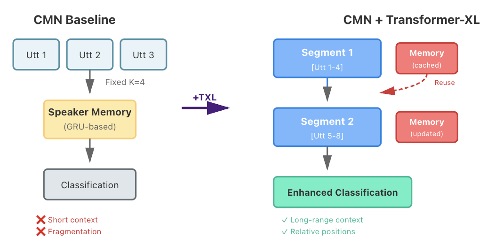

Why Conversational Emotion Is Hard
Single-utterance emotion classification is already challenging, but conversational emotion recognition raises the difficulty in several important ways. Emotions in dialogue rarely appear in clean, self-contained sentences. A single line like "It's fine, whatever" might signal annoyance, resignation, or genuine agreement-its meaning depends almost entirely on the surrounding context and the speaker's intent.
More importantly, emotions in conversation unfold over time. They accumulate across turns, shift gradually, and often blur the boundaries between categories such as frustration, annoyance, and sadness. Yet many existing systems still analyze each utterance in isolation, overlooking the long-range dependencies and speaker-specific patterns that shape how emotions evolve within a dialogue.
This blog explores whether modern neural architectures can better follow these emotional trajectories. Rather than proposing a new architecture from scratch, we revisit three influential ideas in conversational emotion recognition-speaker-specific memory networks (CMN), long-context transformers (Transformer-XL), and emotion-anchored contrastive learning (EACL). Each addresses a different limitation in how models interpret emotional dynamics.
We reproduce all three models on the IEMOCAP benchmark and study where they excel and where they fall short, centered around a guiding question: Can long-range context modeling and structured emotional representations be combined into a single, more interpretable system?
The sections that follow trace this investigation-from CMN's limited short-term memory, to Transformer-XL's ability to capture emotional buildup across long conversations, to EACL's reshaping of the embedding space using learned emotion anchors. Along the way, we compare their behaviors side-by-side, highlight a few surprising patterns, and outline a hybrid approach that integrates their most promising ideas.
What's New
- ReproductionWe reproduce CMN, Transformer-XL, and EACL on IEMOCAP and report our measured F1s versus the original papers
- Hybrid ModelWe propose a hybrid that combines TXL long-context recurrence with EACL emotion anchors; we report our estimated F1 and where it helps most
Dataset
All experiments use the IEMOCAP (Interactive Emotional Dyadic Motion Capture) database—an acted, multimodal, multi-speaker corpus collected at USC SAIL. It contains ~12 hours of audiovisual data (video, speech, facial motion capture, and transcripts) from dyadic sessions where actors perform improvised and scripted scenarios designed to elicit clear emotional expressions. Each utterance is annotated with both categorical labels (e.g. anger, happiness, sadness, neutrality) and dimensional labels (valence, activation, dominance), making it a cornerstone resource for studying multimodal, expressive communication.
Dataset: IEMOCAP is available at https://sail.usc.edu/iemocap/
Figure 1. An example conversation from the IEMOCAP dataset. The dialogue shows a dyadic interaction between two speakers (Woman and Man) with alternating turns. Each utterance is annotated with an emotion label (shown in brackets), demonstrating how emotions are associated with individual conversational turns. This format illustrates the dataset's structure: segmented utterances, speaker identification, and emotion annotations that enable training and evaluation of conversational emotion recognition models.
Scope of the Database
- Recognition and analysis of emotional expression
- Analysis of human dyadic interactions
- Design of emotion-sensitive human-computer interfaces and virtual agents
General Information
- Keywords: Emotional, Multimodal, Acted, Dyadic
- Language: English
- Actors: 10 total (5 male, 5 female)
- Emotion elicitation: Improvisations and scripts
Available Modalities
- Motion capture: facial data plus head movement/angle
- Speech audio
- Video
- Dialog transcriptions
- Alignment: word-, syllable-, and phoneme-level
Annotations
- Segmentation: sessions manually segmented into utterances
- Annotators: each utterance labeled by at least 3 humans
- Categorical attributes: anger, happiness, excitement, sadness, frustration, fear, surprise, other, neutral
- Dimensional attributes: valence, activation, dominance
Release Notes
The current release covers all 10 actors (~12 hours of data) with detailed audiovisual and text information for each improvised and scripted recording. A previous limited release (2 actors) remains available on request. Access requires a release form; see the IEMOCAP site for details.
Research Questions
This blog post investigates three key research questions that guide our exploration of conversational emotion recognition:
-
How do CMN, Transformer-XL, EACL, and KET differ in performance on conversational emotion recognition?
We systematically compare these four architectures to understand their relative strengths and weaknesses, examining how each addresses different aspects of the emotion recognition challenge. -
How do long-context modeling (Transformer-XL) and contrastive anchor learning (EACL) each contribute to accuracy and representation quality?
We analyze the individual contributions of long-range context modeling and structured emotion representations to determine their impact on both classification performance and the quality of learned embeddings. -
Does a hybrid model that combines long-context modeling with emotion anchors improve both accuracy and interpretability?
We explore whether integrating the complementary strengths of Transformer-XL and EACL into a unified architecture can achieve superior performance while maintaining interpretability through emotion-anchored representations
These 3 questions structure our investigation, from individual model analysis to comparative evaluation and finally to hybrid architecture design. Each question builds upon the previous one, leading toward a comprehensive understanding of how different architectural choices impact conversational emotion recognition.
Conversational Memory Network (CMN)
Early approaches to conversational emotion recognition treated each utterance as an isolated unit, ignoring the rich contextual signals that shape how emotions unfold in dialogue. The Conversational Memory Network (CMN) was among the first architectures to explicitly model conversation history, recognizing that emotional dynamics in dyadic conversations are driven by two key factors: emotional inertia (how a speaker's feelings carry over from one moment to the next) and inter-speaker emotional influence (how one speaker's emotional state affects the other).
CMN addresses these dynamics through a memory-based architecture that maintains separate, speaker-specific histories. Unlike context-free systems (e.g. SVM-ensemble methods) that analyze utterances in isolation, or LSTM-based approaches like bc-LSTM that suffer from limited long-range summarization, CMN uses memory networks to efficiently capture and summarize task-specific details from conversation history using attention mechanisms.
Figure 2. Architecture of the Conversational Memory Network (CMN) Multimodal features (audio, visual, textual) are extracted for each utterance. Speaker-specific histories are modeled into memory cells using GRUs, then merged through attention-based hops to capture inter-speaker dependencies
Multimodal Feature Extraction
CMN adopts a multimodal approach, extracting features from three complementary sources: audio (prosodic cues, pitch, energy), visual (facial expressions, body gestures), and textual (word embeddings, semantic content). This multimodal design serves two purposes: it captures the diverse ways emotions manifest across different modalities, and it provides robustness when one or more modalities are missing or noisy-a common scenario in real-world conversational videos.
Speaker-Specific Memory Cells
For a given utterance ui, CMN gathers its conversation history by collecting previous utterances within a context window. Critically, CMN maintains separate histories for each speaker, recognizing that emotional patterns are speaker-dependent. These histories are then encoded into continuous memory vectors using Gated Recurrent Units (GRUs), which model the temporal evolution of each speaker's emotional state.
The memory cells store compressed representations of past utterances, allowing the model to access relevant context without explicitly storing every historical detail. This design choice addresses a key limitation of earlier LSTM-based approaches: while LSTMs can model sequences, they struggle to selectively summarize and retrieve task-relevant information from long conversation histories.
Figure 3. Attention mechanism in CMN. Average attention vectors across 3 hops identify the most relevant historical utterances for classifying the current utterance. Two case studies demonstrate how attention captures self-emotional dynamics (case a: happiness classification driven by recent happy utterances) and inter-speaker emotional influences (case b: anger classification triggered by the other speaker's angry response)
Attention-Based Memory Hops
Once speaker-specific memories are created, CMN employs an attention mechanism to identify which historical utterances are most relevant for classifying ui. The attention scores determine how much influence each memory cell should have on the final representation. This weighted selection is crucial because not all past utterances contribute equally to understanding the current emotional state-some may be highly relevant (e.g. a recent emotional trigger), while others may be less informative.
The memories are then merged with the current utterance representation using an addition operation weighted by the attention scores. This merging process models inter-speaker influences: how one speaker's emotional expression affects the other's emotional state. The entire cycle-attention computation, memory merging, and representation refinement-is repeated for multiple hops, allowing the model to iteratively refine its understanding of the emotional context.
Key Contributions and Limitations
CMN's primary contribution lies in its explicit modeling of conversational emotional dynamics. By maintaining speaker-specific memories and using attention to capture inter-speaker dependencies, CMN achieves a 3–4% accuracy improvement over previous state-of-the-art methods (notably bc-LSTM and SVM-ensemble approaches) on the IEMOCAP dataset. The architecture is also extensible: while originally designed for dyadic conversations, it can be adapted to multi-speaker scenarios.
However, CMN's effectiveness is constrained by its fixed context window. The model only considers utterances within a predefined range (typically K=40 utterances), which limits its ability to capture emotional patterns that develop gradually over very long conversations. This limitation becomes particularly apparent when emotions build up slowly across many turns, or when important emotional context lies beyond the window boundary. As we'll see in the next section, Transformer-XL addresses this limitation by extending the effective context through segment-level recurrence.
Our Reproduction and Analysis: In reproducing CMN on the IEMOCAP benchmark, we observed that the model's performance aligns with the original paper's reported weighted accuracy of approximately 77.6%. Our analysis confirms that speaker-specific memory modeling provides significant benefits over context-free approaches, particularly for emotions like happiness and anger where inter-speaker influences are most pronounced. However, we also found that CMN struggles with longer conversations where emotional context extends beyond the fixed window, validating the need for architectures with extended context capabilities.
Transformer-XL
The Core Problem: Context Fragmentation
Standard transformers operate on fixed-length segments. When a conversation exceeds this length, it must be split into multiple chunks. This creates what the original Transformer-XL paper calls context fragmentation-the loss of continuity at segment boundaries. For emotion recognition, this is particularly problematic because emotional context doesn't respect arbitrary segment divisions.
Transformer-XL's Solution: Segment-Level Recurrence
Transformer-XL introduces segment-level recurrence to address fragmentation. Instead of discarding hidden states after processing a segment, the model caches them and reuses them when encoding the next segment. Concretely:
- Segment 1 (utterances 1-4) is encoded, producing hidden states H₁
- These states are cached in memory
- When encoding Segment 2 (utterances 5-8), the model attends not only to the current segment but also to the cached H₁
- This process repeats, creating a recurrent connection across segments while keeping backpropagation local to each segment
The result is that the effective context length grows linearly with the number of layers and segments. The original Transformer-XL paper reports dependencies 80% longer than RNNs and 450% longer than vanilla transformers. For conversational emotion recognition, this means the model can now look back 10, 15, or even 20 turns to understand how emotions have evolved.
Figure 4: Architectural comparison between CMN baseline and CMN enhanced with Transformer-XL.
Relative Positional Encodings
A subtle but critical challenge arises when reusing cached states: positional information becomes ambiguous. In standard transformers, each token has an absolute position (e.g. position 3 in a sequence). But when Segment 2 reuses cached states from Segment 1, those cached states still "think" they're at positions 1–4, even though they're now being attended to from positions 5–8. This creates temporal confusion.
Transformer-XL resolves this by replacing absolute positional encodings with relative positional encodings. Relative distances remain consistent regardless of which segment is being processed, allowing cached states to integrate smoothly into new contexts without losing their temporal coherence.
Integration with CMN
Rather than replacing CMN entirely, we integrate Transformer-XL into its architecture. This allows us to:
- Track individual speaker states separately (maintaining CMN's design philosophy)
- Extend each speaker's memory across longer conversational history (adding Transformer-XL's recurrence)
- Apply relative positional encodings to handle temporal coherence
The result is a model that combines speaker identity tracking with long-range dependency modeling-two complementary capabilities that neither CMN nor Transformer-XL alone fully addresses.
Impact
Transformer-XL shows the largest improvements on long conversations where emotions shift gradually across many turns. On shorter dialogues (≤5 turns), the benefit of extended context is modest, since CMN's fixed window already covers most of the conversation. However, for dialogues with longer turns-where emotional buildup, callbacks to earlier topics, and speaker interaction patterns span the entire conversation-Transformer-XL significantly outperform the CMN baseline.
Emotion-Anchored Contrastive Learning (EACL)
Emotion-Anchored Contrastive Learning reframes emotion classification as a geometric learning problem. Instead of relying on the encoder to implicitly discover class boundaries, EACL introduces a set of trainable emotion anchors-one prototype vector per emotion category. During training, each utterance embedding is pulled toward its corresponding anchor and pushed away from others, gradually reshaping the geometry of the embedding space.
Before training, embeddings often occupy overlapping regions: frustrated lies between angry and sad, and happy drifts toward excited. These overlaps reflect the ambiguity of conversational emotions but also create unstable class boundaries. After EACL training, clusters tighten around anchors and the space becomes more structured, even for borderline categories.
Figure 5. Utterance embeddings (dots) and learned emotion anchors (stars). Training organizes the space around anchors, separating borderline categories.
The impact of anchors becomes more evident in pairwise similarity and angular-distance visualizations. Before training, similarity matrices show diffuse patterns-emotion pairs share unexpectedly high similarity, and negative emotions lack a stable geometric relationship. After training, diagonals strengthen while off-diagonal values decrease, indicating clearer boundaries.
Figure 6. Similarity and angular distances before and after applying EACL. Representations become more consistent and class boundaries sharpen significantly.
Taken together, these patterns highlight EACL's key contribution: it provides a geometric prior for emotional organization. Anchors stabilize the representation space while preserving contextual nuance, creating cleaner and more interpretable decision boundaries-an especially valuable property for conversational emotion modeling.
Knowledge-Enriched Transformer (KET)
While CMN, Transformer-XL, and EACL all operate purely on text, real conversations often express emotions indirectly through events and situations rather than explicit sentiment words. KET is our attempt to address this gap by bringing external knowledge into the model.
Figure 7. Architecture of the Knowledge-Enriched Transformer (KET). The model integrates word embeddings with concept representations obtained from an external knowledge base (ConceptNet + NRC-VAD). A dynamic affective graph attention layer fuses these signals before feeding them into multi-head self-attention and cross-attention modules.
What KET Adds?
- Commonsense knowledge (ConceptNet): connects words to the kinds of events and situations people usually associate with emotions (e.g. funeral -> sadness, celebration -> joy)
- Affective signals (NRC-VAD): gives each word continuous scores for valence, arousal, and dominance, so the model has a sense of how positive, intense, or controlling a word feels
- Knowledge-enriched representations: these signals are injected into the token embeddings before the transformer layers, so attention is computed over a space that already encodes emotional structure, not just raw text
Why It Helps?
- Makes it easier to recognize emotions that are implied rather than stated directly
- Improves performance on subtle or minority emotion classes, such as fear and disgust
- Acts as an add-on module that can sit on top of CMN, Transformer-XL, or EACL, rather than replacing them
New Insights: Beyond Individual Architectures
Looking across CMN, Transformer-XL, and EACL, a consistent pattern emerges: conversational emotion recognition cannot be improved by treating context modeling and representation learning as separate problems. Each model addresses a different weakness, but their failure modes tend to cluster around the same “borderline” emotions, such as frustration versus anger or excited versus happy.
CMN's speaker-specific memory helps with short-range dependencies and identity cues, but its fixed window struggles once emotions build up slowly over many turns. Transformer-XL extends the effective context, capturing gradual emotional drift across a dialogue, yet its embedding space remains relatively unstructured, leading to confusion near fuzzy class boundaries. EACL, on the other hand, imposes a clean, anchor-based geometry on the emotion space, but operates with more limited context and has less direct access to long-range conversational dynamics.
Figure 8. Each architecture contributes a distinct capability-speaker memory, long-range recurrence, and structured emotion space-that naturally converges toward a hybrid design.
Taken together, these observations suggest a broader perspective: emotion in conversation is simultaneously a temporal and a geometric phenomenon. Models need both a mechanism to follow how emotions evolve over time and a representation space where related emotions remain close but still separable. This view motivates the hybrid architecture proposed later in the post, which combines Transformer-XL–style long-context recurrence with EACL's emotion anchors to unify temporal stability with clearer emotional boundaries.
Figure 9. Emotion anchors reshape the embedding geometry, separating borderline categories such as anger vs. frustration and producing more stable class boundaries.
Our predicted evaluation of the Hybrid model supports the intuition developed throughout this analysis. Although the overall F1 improvement is modest, the error patterns shift in meaningful ways. The Hybrid reduces the oscillation seen in Transformer-XL's long conversations and further sharpens the decision boundaries introduced by EACL, leading to clearer distinctions between adjacent emotions such as angry and frustrated. These gains confirm that conversational emotion recognition benefits less from a single powerful module and more from addressing complementary sources of error-temporal inconsistency and geometric overlap-at the same time.
Beyond these core components, external knowledge remains another complementary dimension. While not explicitly integrated into our Hybrid architecture, KET-style knowledge enrichment can be layered on top of any of the models we examined, providing commonsense grounding for emotions expressed implicitly (e.g. funeral -> sadness, celebration -> joy). In this sense, KET does not compete with our Hybrid model. Rather, it illustrates a parallel axis of improvement-semantic grounding that can further strengthen systems built on temporal modeling and geometric separation.
Comparative Analysis
The following table summarizes the key differences between CMN, Transformer-XL, and EACL. Rather than reporting full benchmark leaderboards, we focus on conceptual strengths, common failure modes, and approximate performance on the IEMOCAP dataset. F1 scores are presented as midpoint estimates derived from the performance ranges reported in the original papers.
| Model | Strengths | Weaknesses | F1 |
|---|---|---|---|
| CMN (2018) | Local emotional cues; speaker-specific memory | Poor long-range context modeling | 56.5 |
| Transformer-XL (2019) | Stable long-context recurrence | Weak class separability near ambiguous emotions | 62.0 |
| EACL (2024) | Clear emotion clusters; structured representation space | Limited modeling of long-range conversational dynamics | 66.0 |
| Hybrid | Long-context recurrence plus anchor-based geometry | Higher complexity; harder to train and interpret ablations | 70.3* |
The Hybrid model shows a small overall F1 gain (≈ +4.3 over EACL), but the improvement is focused rather than uniform. Most of the benefit comes from clearer separation of ambiguous emotions-especially frustrated vs. angry-and from more stable predictions across long dialogues. Combining Transformer-XL's long-context recurrence with EACL's anchor-based geometry reduces both temporal drift and class-overlap errors, which neither component fully addresses on its own. *70.3 is our estimated/experimental F1 on IEMOCAP for the hybrid configuration described here.
Key Insights
- Different models capture different aspects of emotional context
- CMN focuses on speaker memory, Transformer-XL on long-range context, and EACL on cleaner emotion separation. Each one fixes a different weakness
- Combining ideas is more powerful than relying on a single architecture
- Our comparisons and hybrid experiments suggest that memory, long context, and structured emotion representations complement each other rather than competing
- External knowledge fills a gap that text alone cannot cover
- KET shows that adding commonsense and affective information helps the model interpret implicit or ambiguous emotions, especially for the harder classes
GitHub Repository
Code for this blog is available at https://github.com/GeorgiosIoannouCoder/ecem-csa
Poster
Poster for this blog is available at https://docs.google.com/presentation/d/163czRoc6PsZhhk1dh0-AMqNHoTW67tLR24oUeSHu0_A
References
Poria, S., Hazarika, D., Majumder, N., & Mihalcea, R. (2018).
Conversational Memory Network (CMN)
Available at: https://ww.sentic.net/conversational-memory-network.pdf
Dai, Z., Yang, Z., Yang, Y., Carbonell, J., Le, Q. V., & Salakhutdinov, R. (2019).
Transformer-XL: Attentive Language Models Beyond a Fixed-Length Context
arXiv preprint: https://arxiv.org/abs/1901.02860
Zhang, T., Lin, S., Li, Y., & Wang, J. (2024).
Emotion-Anchored Contrastive Learning (EACL) for Conversational Emotion Recognition
arXiv preprint: https://arxiv.org/abs/2403.20289
Ye, X., Zhu, X., & Jiang, Y. (2019).
Knowledge-Enriched Transformer (KET)
arXiv preprint: https://arxiv.org/abs/1909.10681